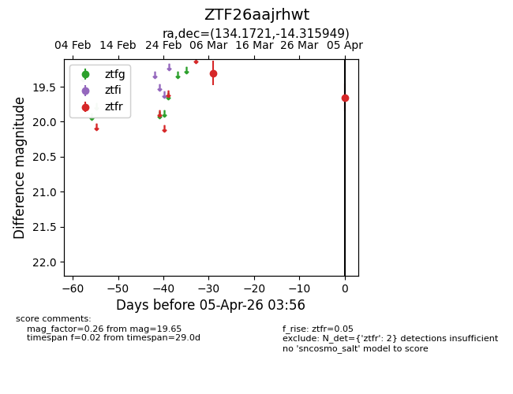
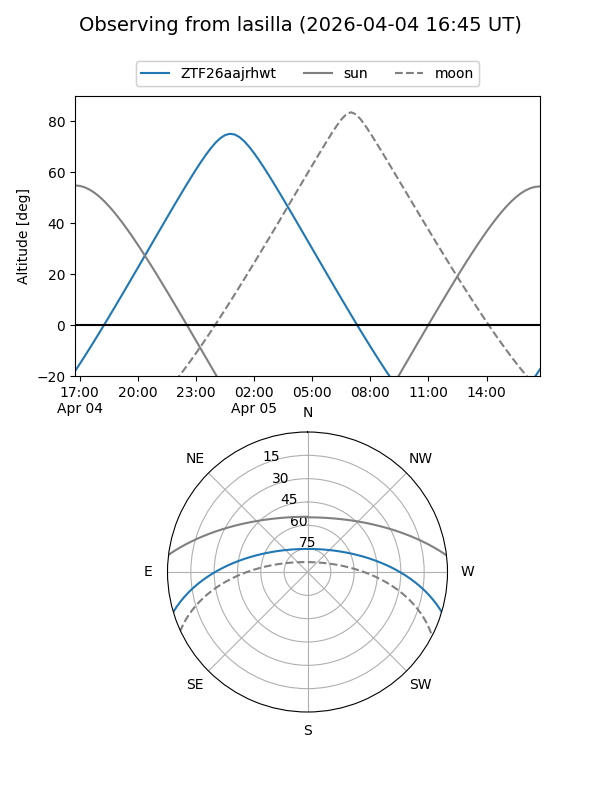
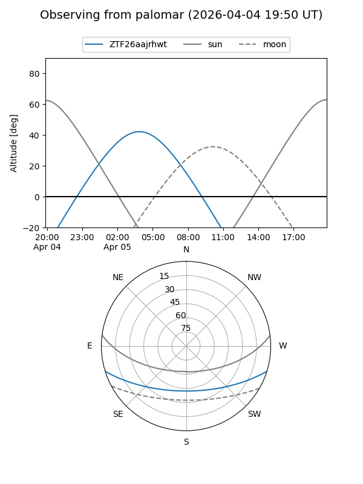

ZTF26aajrhwt
Target ZTF26aajrhwt at 2026-04-05 04:00
Aliases and brokers:
FINK: link
Lasair: link
ALeRCE: link
alt names
ZTF26aajrhwt (ztf,fink_ztf)
Coordinates:
equatorial (ra, dec) = 134.1721,-14.31595
equatorial (HMS+DMS) = 08:56:41.32,-14:18:57.42
galactic (l, b) = (241.4437,+19.59810)
Flags:
Photometry:
last ztfr=19.65
2 ztfr detections
Lightcurve

Visibility


Additional plots